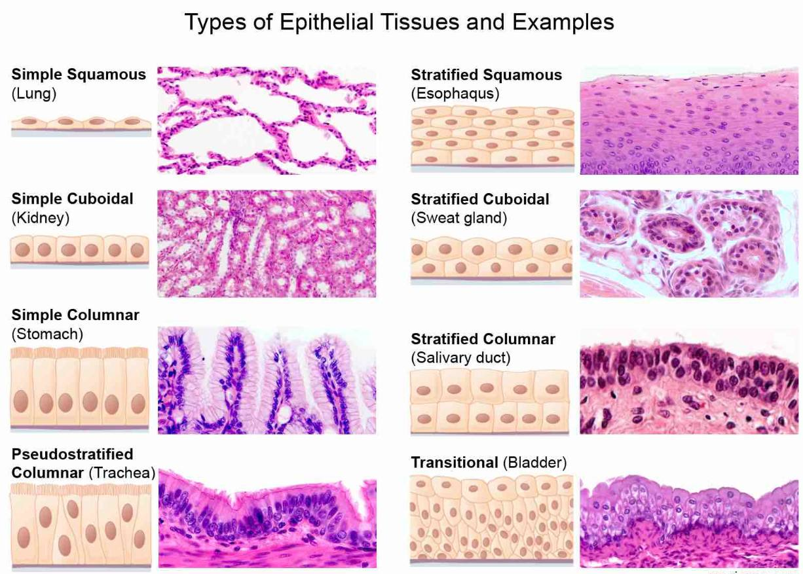
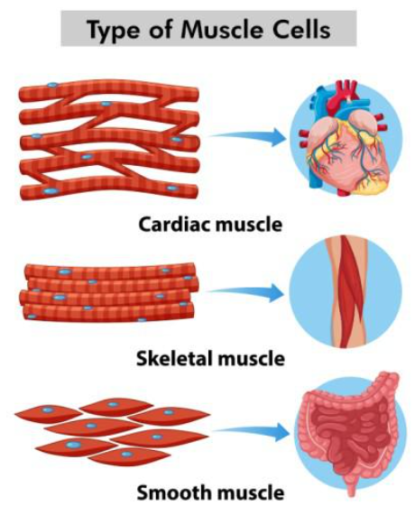
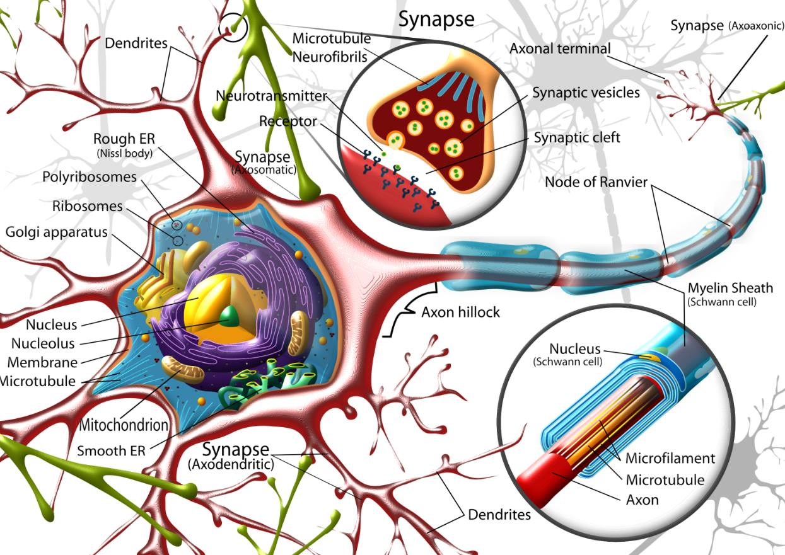

Characteristics
- Highly mobile and flexible compared to plant tissues.
- Mostly composed of living cells with high metabolic activity.
- Growth is uniform (diffused) throughout the body.
- No cell walls; cells are bounded by a flexible plasma membrane.
- Require more oxygen and nutrients to support locomotion and active functions.
1. Epithelial Tissue (Covering)
Flat, tile-like cells. Found in lung alveoli and blood vessels for diffusion and filtration.
Cube-shaped cells. Found in kidney tubules and glands for secretion and absorption.
Tall, pillar-like cells. Found in the lining of the stomach and intestine for absorption and secretion.
Multiple layers of flat cells. Found in skin, mouth, and esophagus for protection.
Appears layered but isn’t; often ciliated. Found in respiratory tract for mucus movement.
Stretchable cells. Found in urinary bladder and ureters to allow expansion.
Specialized cells forming glands. Secrete hormones, enzymes, and mucus.
2. Connective Tissue (Support)
Connective tissues bind, support, and protect other tissues in the body. They are the most abundant and widely distributed tissues in animals, performing functions such as transport, storage, defense, and structural support.
A fluid connective tissue that transports oxygen, carbon dioxide, nutrients, hormones, and waste products. It also plays a vital role in immunity and clotting.
A clear fluid connective tissue that circulates through lymphatic vessels. It helps maintain fluid balance, absorbs fats, and supports immune defense by transporting white blood cells.
A rigid supportive connective tissue forming the skeletal framework. Stores minerals like calcium and phosphorus and provides protection and mechanical strength.
A flexible supportive connective tissue found in joints, nose, ear, and trachea. Provides cushioning, reduces friction, and maintains structural shape.
Fibrous connective tissue that connects muscles to bones. Strong and inelastic, enabling efficient transfer of force during movement.
Fibrous connective tissue that connects bones to other bones. Provides stability to joints while allowing controlled movement.
Specialized connective tissue that stores fat. Provides insulation, cushions organs, and serves as an energy reserve.
Loose connective tissue found beneath the skin and around organs. Provides elasticity, fills spaces, and acts as a packing material.
Forms a supportive framework for organs like the liver, spleen, and lymph nodes. Helps in filtration and structural support.
3. Muscular Tissue (Movement)
Voluntary muscles attached to bones that help in body movement and posture.
Found in walls of internal organs like stomach, intestine, and blood vessels. Work involuntarily.
Special involuntary muscles found only in the heart. Contract rhythmically without fatigue.
4. Nervous Tissue (Control)
Specialized cells that carry electrical impulses between the brain, spinal cord, and the rest of the body. Each neuron consists of a Cell Body, Axon, and Dendrites, enabling rapid communication and coordination. Nervous tissue controls voluntary and involuntary actions, integrates sensory input, and directs responses.
Differences: Plant vs Animal Tissue
| Feature | Plant Tissue | Animal Tissue |
|---|---|---|
| Mobility | Stationary (Fixed). | Mobile (Move around). |
| Growth | Localized at tips (meristems). | Uniform across body. |
| Energy Need | Less energy required. | High energy required. |
| Cell Living Status | Many dead cells present (e.g., xylem, sclerenchyma). | Most cells are living and metabolically active. |
| Coordination | Functions mainly regulated by hormones and environmental factors. | Functions coordinated by both nervous system and hormones. |
| Structure | Relatively simple and repetitive organization. | Complex organization forming organs and systems. |
Functional Understanding of Animal Tissues
Animal tissues are organized according to the needs of movement, protection, communication, and internal transport. Epithelial tissue protects surfaces, connective tissue supports and joins body parts, muscular tissue produces movement, and nervous tissue carries messages quickly.
These tissues do not work separately. For example, when we touch a hot object, nervous tissue detects the stimulus, muscles move the hand away, blood supplies oxygen and nutrients, and skin protects the inner body. This shows how animal tissues coordinate to maintain life.
Summary
Animal tissues are specialized groups of living cells that enable movement, coordination, protection, and communication. They are classified into four main types: epithelial (covering), connective (support), muscular (movement), and nervous (control). Unlike plants, animal tissues are highly dynamic, metabolically active, and work together to form complex organs and systems that sustain life and allow adaptation to the environment.
Diagrams:



